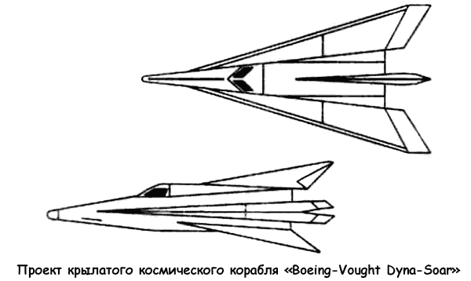
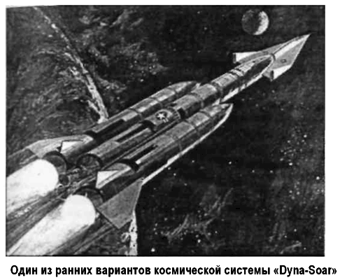
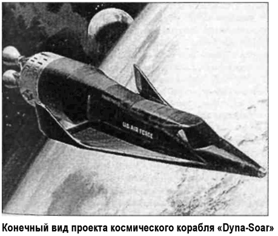

Проект крылатого космического корабля «Dyna-Soar»
В октябре 1957 года, менее чем через неделю после того, как советские ракетчики вывели на орбиту первый искусственный спутник Земли, состоялось совещание представителей НАСА и ВВС США, созванное исключительно для обсуждения последствий этого события. В ходе совещания были рассмотрены материалы по «космическим» проектам ВВС. Особое внимание участники уделили крылатым аппаратам, как средству для полета человека в космос.
В результате пришли к решению объединить проекты «Brass Bell», «RoBo» и «HYWARDS» в единую программу разработки, насчитывающую три стадии и названную «Дайна-Сор» («Dyna-Soar», от «Dynamic Soaring» — «Разгон и Планирование»). В основу новой разработки была положена концепция бомбардировщика-«антипода» Эйгена Зенгера. 21 декабря 1957 года командование ВВС выпустило «Директиву 464Л» («464L») о начале первого этапа в разработке системы «Дайна-Сор» — создании небольшого одноместного гиперзвукового ракетоплана.
Главная задача первого этапа состояла в том, чтобы построить экспериментальный летательный аппарат для получения данных о режимах полета, значительно превышающих режимы ракетоплана «Х-15». Ожидалось, что будущий аппарат сможет развивать скорость до 5,5 км/с и достигнет высоты более 50 километров, используя стартовый ускоритель, отобранный для «Хьювардс». На этом же этапе планировалось оценить перспективы военного применения системы «Дайна-Сор».
Вторая стадия предусматривала достижение тех же целей, что и более ранняя программа «Брасс Белл». Двухступенчатый стартовый ускоритель разгонял бы аппарат до скорости 6,7 км/с на высоте 106,8 километра, после чего ракетоплан должен был планировать на дальность 9250 километров.
При этом система должна была уметь производить высококачественное фотографирование и радиолокационную разведку, а в случае необходимости и бомбардировку.
Аппарат, который собирались построить на третьем, заключительном, этапе, должен был решать задачи, предусмотренные для сверхвысотного бомбардировщика «РоБо», способного выходить на околоземную орбиту.
В главе 6 я рассказывал о закрытой конференции, устроенной командованием ВВС на исходе января 1958 года. На этой конференции производился отбор проекта, который мог бы обеспечить скорейший запуск обитаемой капсулы в космическое пространство («Project 7969», «Man in Space Soonest»).
Поскольку мы уже обсуждали предложенные на той конференции проекты, я не буду вновь возвращаться к ним. Замечу только, что те из них, которые представляли собой вариации на тему «орбитального самолета», рассматривались еще и в рамках конкурса, объявленного по программе «Дайна-Сор».
К марту 1958 года выделились два основных подхода к решению задач первого этапа новой программы. Первая концепция получила название «Сателлоид».
Сателлоид представляет собой искусственный спутник Земли, снабженный ракетными двигателями. Идея осуществления полета сателлоида состоит в следующем. Составная ракета имеет в качестве последней ступени самолет. С помощью ракеты-носителя самолет доставляется на высоту 200–300 километров, где разгоняется до первой космической скорости — 8 км/с. Так как на этих высотах еще имеется воздух, то для того, чтобы сателлоид не сошел с орбиты, он снабжается небольшим ЖРД с очень незначительной тягой (порядка нескольких килограммов).
Три авиационные фирмы выбрали концепцию «сателлоида» для своих проектов. Компания «Рипаблик» предлагала планер с дельтовидным крылом массой 7258 килограммов, разгоняемый с помощью трехступенчатого твердотопливного ускорителя и способный нести на борту одну большую ракету класса «Космос-Земля». Фирма «Локхид» представила проект ракетоплана аналогичной конструкции массой 2268 килограммов, однако предложенная в качестве носителя МБР «Атлас» не давала аппарату возможности достичь орбитальной высоты, а значит, и глобальной дальности полета.
Фирма «Норт Америкен», как мы помним, отстаивала проект «Х-15В» — орбитальный двухместный ракетоплан с невозвращаемой ракетой-носителем на ЖРД.
Вторая концепция была основана на схеме высотного полета Эйгена Зенгера, когда ракетоплан «забрасывается» на сравнительно небольшую высоту (порядка 90 километров) и летит по нисходящей траектории («затухающая синусоида»), рикошетируя, отталкиваясь от плотных слоев атмосферы.
Эту схему полета предпочли другие шесть авиафирм, участвовавших в конкурсе. Фирма «Конвейр» предложила планер с дельтовидным крылом массой 5126 килограммов, снабженный воздушно-реактивными двигателями посадки.
Проект фирмы «Дуглас» представлял собой планер весом 5897 килограммов со стреловидным крылом, стартующий с помощью трех модифицированных ступеней баллистических ракет «Минитмен», работающих параллельно. Фирма «Макдоннелл» предложила аналогичный проект, но выбрала в качестве носителя модифицированную МБР «Атлас».
Фирма «Нортроп» предложила планер массой 6441 килограмма, запускаемый «гибридным» ускорителем, использующим твердое горючее и жидкий окислитель. Группа «Белл-Мартин» разработала планер массой 6033 килограмма с дельтовидным крылом и экипажем из двух человек; в качестве ракеты-носителя собирались использовать модифицированную МБР «Титан». Фирмы «Боинг» и «Воут» («Vought») предложили совместный проект небольшого планера весом 2948 килограммов с дельтовидным крылом со стартовым ускорителем на базе связки МБР «Минитмен». 14 ноября 1958 года ВВС и НАСА заключили соглашение, очерчивающее границы участия Аэрокосмического агентства в программе «Дайна-Сор». При этом ВВС брали на себя финансирование и руководство программой, а НАСА отвечало только за научно-технические исследования и консультации.
В результате был сформирован межведомственный Технический совет, которому и предстояло сделать окончательный выбор в пользу того или иного проекта.
Из всех авиационных фирм, участвовавших в конкурсе, только группы «Белл-Мартин» и «Боинг-Воут» предприняли попытку разработать действительно орбитальный космический аппарат, в то время как другие подрядчики предусматривали создание некоего гиперзвукового исследовательского аппарата, который мог быть со временем доведен до стадии орбитального самолета.
В конечном итоге все проекты создания «промежуточного» гиперзвукового ракетоплана были отвергнуты, а финансирование на продолжение проектных работ получили только группы «Белл-Мартин» и «Боинг-Воут».

Поскольку ожидалось сокращение бюджетных ассигнований, Технический совет по программе «Дайна-Сор» выпустил новый план работ, состоявший из двух этапов вместо трех, принятых ранее.
На первом этапе фирмы, победившие в конкурсе, должны были представить конечный проект орбитального летательного аппарата, оценив при этом его аэродинамические характеристики, необходимость присутствия на борту пилота и перспективы размещения военного снаряжения.
Новые технические требования, предъявленные к орбитальному самолету «Дайна-Сор», теперь выглядели так.
Это должен быть пилотируемый планер с большой стреловидностью крыла по передней кромке. Масса планера — от 3000 до 6000 килограммов, скорость — не менее 7,6 км/с на высоте 90 километров. В качестве стартового ускорителя планировалось использовать связку твердотопливных баллистических ракет «Минитмен».
Второй этап программы должен был начаться не позднее января 1962 года с аэродинамических испытаний прототипа аппарата, сбрасываемого с самолета-носителя. В июле того же года планировалось осуществить первые суборбитальные запуски, а к осени 1963 года — первый орбитальный полет.
«Доводка» систем вооружения «Дайна-Сор» шла параллельно с разработкой самого аппарата. Планировалось, что боевая модификация орбитального самолета «Дайна-Сор 2» («Dyna-Soar II»), способная вести военные действия, появится уже к концу 1967 года. Командование ВВС собиралось использовать этот аппарат для разведки, для выполнения бомбардировочных миссий, а также как часть системы противовоздушной и противокосмической обороны. Вооружение «Дайна-Сор 2» должно было включать управляемые ракеты класса «космос-космос», «космос-воздух» и «космос-Земля» и обычные бомбы. 23 апреля 1959 года Управление по научным исследованиям Министерства обороны потребовало внести изменения в программу «Дайна-Сор». Снова был поднят вопрос о создании гиперзвукового ракетоплана, рассчитанного на скорости до 6,7 км/с. Никаких новых стартовых ускорителей разрабатывать не предполагалось. Вместо этого ракетоплан должен был быть запущен с помощью существующих носителей, принадлежащих ВВС или НАСА. Понятно, что подобные «метания» никак не способствовали планомерному развитию программы, что в конечном итоге и привело к ее закрытию.
29 октября 1959 года был выпущен еще один вариант технического задания к системе «Дайна-Сор», а межведомственный Технический совет вернулся к старому рабочему плану, состоящему из трех этапов. Однако теперь на первом этапе фирма-производитель должна была изготовить прототип пилотируемого планера массой от 3000 до 4200 килограммов, который сразу же собирались запустить в суборбитальный полет с помощью модифицированной МБР «Титан I». На втором этапе предполагалось достигнуть орбитальных высот и скоростей, отработать маневрирование на орбите и проведение военных операций. На третьем этапе планировалось создать полномасштабную и полнофункциональную орбитальную боевую систему, использующую носитель «Титан III».
Согласно новому (или плохо забытому старому) плану, одобренному 2 ноября 1959 года, первое из 19 испытаний со сбросом прототипа с самолета-носителя собирались провести в апреле 1962 года. На июль 1963 намечался первый суборбитальный запуск.


Восемь пилотируемых суборбитальных полетов были запланированы на вторую половину 1964 года. Первый пилотируемый орбитальный полет, который должен был «ознаменовать» собой начало второго этапа, мог состояться в августе 1965 года со стартового комплекса № 40 на мысе Канаверал, принадлежащего ВВС. 9 ноября 1959 года группа «Боинг-Воут» была объявлена победителем конкурса на проект «Дайна-Сор» (участие фирмы «Vought» в конечном счете свелось лишь к разработке и изготовлению высокотемпературного носового обтекателя; впоследствии эта фирма делала аналогичную работу для проекта космического корабля «Спейс Шаттл»). Фирма «Мартин» получила контракт на разработку варианта носителя «Титан», приспособленного для запуска орбитального самолета. 27 апреля 1960 года военно-воздушные силы официально заказали десять аппаратов «Дайна-Сор» («Система 620А») и присвоили им серийные номера ВВС от 61-2374 до 61-2383.
Программа закупок запрашивала поставку двух аппаратов в течение 1965 года, четырех — в 1966 году и двух — в 1967 году.
Два корпуса ракетоплана должны были использоваться для статических испытаний и беспилотных испытаний со сбросом с самолета-носителя. 6 декабря 1960 года было объявлено о заключении дополнительных контрактов: одного с фирмой «Хонейвелл» («Honeywell») — на разработку основных бортовых систем и одного с фирмой «РКА» («RCA») — на разработку систем связи и передачи данных.
В 1959 году летчиками-испытателями Джеком Маккеем и Нейлом Армстронгом был выполнен ряд полетов по программе «Дайна-Сор» на истребителях «JF-102A» и «F-5D» для отработки маневрирования и посадки.